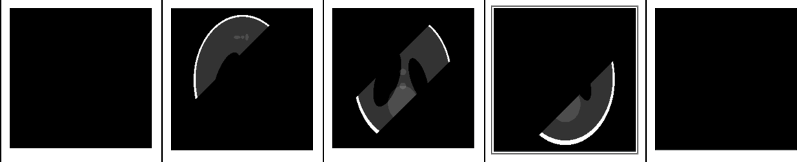

Hello, I am Brayan. I am a software developer.
I am a senior at the University of Houston looking for employment opportunities in the computer science field. I value clarity and perseverence above all else. These ideals guide my general approach to problem solving and life in general.
I was born in Tegucigalpa, Honduras and moved to the United States at the age of 10. I enjoy gaming, coding, playing soccer and volleyball, and trying new foods. The purpose of this website is to serve as a portfolio and to practice on my CSS, HTML, and Javascript knowledge.
Here is my Git, Gmail, and LinkedIn:
![]()
![]()
![]()
My Computer Science Journey:
My journey as a computer scientist sparked when I was in middle school. I took a class called "Globoloria" It has a strange name, but its purpose was to try and introduce computer science to students through game development. I didn't really learn much in this class, it was mostly copying and pasting Java code given to us and messing around with some values to change colors, add our own character models, etc. It felt like I was not the one who made it. However, despite not learning much from this class I did gain something from it, I now knew I wanted to go into computer science. Though at the time I didn't know that it was called "computer science." It was not until my first year at the University of Houston and the first semester since COVID that I would truly begin to develop as a computer scientist. I had my first real computer science course and it was quite the wake-up call. So far all I had done in the past was copy and paste some code and mess around with values to better understand it. However, this was no longer an option that I could do. In my Intro to computer science (mainly focused on C++) course I felt like I was extremely behind everyone else. As far as I was concerned everyone had done some type of computer science course even if it was in a different coding language. It was a huge struggle, so I had to put in extra work to be able to catch up to others and make HW's feel manageable. So, far everything was going well I was scoring full marks in all assignments, but then the midterm came. For me and for many others in my class as well it went horribly, despite studying for days I scored a 37%. I felt extremely ashamed and disappointed in myself, but it gave me some insight as to what computer science was going to be like. It was not going to be easy and I would have to put in a huge amount of work if I want to score good marks in exams. After putting in loads of effort and having a stressful first semester I managed to score an A. To let you know how much I improved, in my second midterm I was able to score 76% a 40-point increase! Then in my final exam, I scored a 97% which made me feel very proud of myself and fulfilled. Here I learned one reason why I like computer science as you continue to improve and complete projects it feels very rewarding and I actually get to see my progress. Two years ago I wouldn't have been able to even think about making this website, much less going through the trouble of hosting it. Then I completed my data structures course which was an even bigger struggle than the previous class, still scored overall higher than my previous course, but it was even harder to maintain. After I finished data structures I got into different branches of computer science. I started with data science and digital imaging which was really interesting and very refreshing after going through all the main components of computer science, it was nice to get a small break from learning the "basics." I gained more interest in data science in general than I did in digital imaging, though I will say I believe my digital imaging project was more enjoyable to make than my data science project was. The next two branches that I dabbled with were AI/Machine Learning and Database Systems. Both projects for those classes respectively were very challenging to make, however, it was very enjoyable as well and I gained a new interest in database systems. This database class had me create a database and make a web application that could connect to my database and interact with it. It was gratifying completing this project, especially after going through the struggle of completing my team members' part of the project. All of the courses so far make me feel like I have learned so much, and even though this is the case I know that I have a long way to go before I can complete this journey as a computer scientist.
This is a recent project of mine and one that I am very proud of. What was once supposed to be a group project
turned out to be one of the toughest duo assignment that I have ever worked on. The project ended up being very tough because me and one of my
teammates had to do double the work because our other three teammates didn't do their parts and if they did "do it" it did not work. Enough about that, despite how frustrating this project was to make. I genuinely enjoyed the contents of the project. I really enjoyed creating the relational database for a clinic with all of
its different relations, attributes, and triggers as well as building what was technically my first website filled with data entry/modification/deletion forms. This application was made with different users in mind those being doctors, admin, and patients. It also had its own user authentication system to go along with it. Connecting the database to the web application was a bit
tough to figure out because I had no prior experience doing something like this and we were limited to using only vanilla methods to connect these two. However it did not task
to long to figure out how to properly connect these two, once this was done me and my teammate were speeding creating all the different data entry/modification forms and views and later connecting them.
In my opinion the most difficult part about this project was hosting the website and databse through AWS. In all fairness I received a ton of help when hosting the website. I am still extremely
unsure of how to host websites through AWS and would probably fail if I was asked to do so at this exact moment. Thankfully however I get to practice hosting a website thanks to this
portfolio website. I am extremely proud of this project however there are two things that I do regret about this project one is the color scheme (which I didn't get to pick) and the other was the lack of
prepared statements and ways to ensure non-authorized users cannot access the data. At the time that I finished this project I did not even know that these things were necessary or even existed. In my mind I
thought there were already protected by whatever DBMS I was using. So, this might call to revisit this project in the near future to change both this applications aesthetics and security.
If you would like to go to the website directly
click here. Then use one of the following logins:
- Username: BM100 & PW: admin; this is the admin login
- Username: Doctor & PW: 12345; this is the login of an employee
- Username: SH7231 & PW: 12345; this the login of a patient
- Please fill free to create your own patient account! However, you won't be allowed to make an appointment with a specialist until giving that account permission through the doctor account.

This is a snapshot of the login page to my web application.

This a snapshot of the agents moving around the world while the process is still running
This is one of my most recent projects where I was tasked to apply methods that I learned in my AI class.
I was tasked with devicing two agents that are placed in a 3D world of size 3x3x3. These two agents were tasked
with traversing the 3D world and collecting blocks at "pickup cells" and dropping them off at "drop off cells." The actions that the agents
take yields rewards, those being: regular cells have a reward of -1, pickup cells(and picking up blocks) 14, drop off cells(dropping off blocks) 14, risky cells -2.
There are a few more rules in this world like the two agents can't be in the same cell, pick up cells can't be accessed
if the agents already have a block, and drop off cells can't be accessed if the agent does not have a block.
With those rules out of the way the agents traveled around the world through the use of either SARSA or
QLearning depending on the experiment that is being run. Both of these learning strategies employ learning policies those being
P-Random, P-Greedy, and P-Exploit. P-Random chooses a direction randomly as long as it follows the rules and is not out of bounds.
P-Greedy chooses the direction based on which future direction has the highest Q-value and is a valid direction to take. Finally P-Exploit randomly
chooses between either P-Greedy or P-random based on a 80/20 proportion respectively. The agent will travel around the world using all these methods and
updating the Q-table to take better decisions as they continue traveling around the world with a limit of 10,000 steps to pick up all blocks and drop them off while yielding
the highest possible reward.
This project along with my CT Scan project are one of my early projects
that I worked on. In this project I dabbled into data science being
tasked with finding a data set and running a few of the algorithms that
I was taught and interpreting the results. I ended up selecting a Tennis
tournament data set with 2000+ observations. I began by cleaning up my data
by deleting any predictors that I deemed unnecessary, filling in any missing values,
and scaling/factoring all of my parameters. After all of the data cleaning was
completed I split my data set into a training and a testing set and then I
performed the Kth-Nearest Neighbor and SVM algorithm unto my two sets. Both of my
data models were able to yield an accuracy 80%+ meaning that we will be able to
successfully predict the results of a match correctly 80% of the time. My report mainly
consisted talking about what the 80% accuracy means, all the nuiancess with my data set,
small section talking about over-fitting, and how the data models work.

This is my confusion table after running a radial SVM

This is an example of a 5 slice image
This is one of my early projects. In this project the goal was to create a simulation of a CT Scan, in this case, a virtual CT Scan.
We begin this project by creating an object to perform the image reconstruction of the CT scan. We call this image a "virtual phantom"
which serves as a stand in for what a CT scan is normally used for. I created my phantom to simulate a human brain and allow the user to
choose the dimensions of the phantom (which will be of size nxn). After the creation of our object we then have to simulate the image "slicing"
that a CT scan does. Normally CT scans scan sections of the full object and then put them back together. Since I don't have pre-made "slices"
for my image, I chose to let the user input the amount of slices that they would like to see for the image and the direction of the cuts(diagonal, horizontal, or vertical).
The orientation of the images play a huge part in the way the cut is done, horizontal and vertical cuts are quite simple. However diagonal cuts are
not as simple, I decided to use the linear inequality "x + y <= ((row+col)*(1/numberofImageSlices))" to figure out the diagonal slices that should be done. Keep in mind that equation is soley for the first slice but the rest follow a similar pattern.
I then create X amount of slices all based on user input to our image. Finally, we get around to image reconstruction which the CT scan is all about. Using the slices that were
created previously I put together the image that we made before. I create an empty image with the size that the user asked for and for horizontal, diagonal,
and vertical images it is quite simple we are able to add the images next to to each as they are being sliced in order to avoid any overlap or wrongly ordered images.